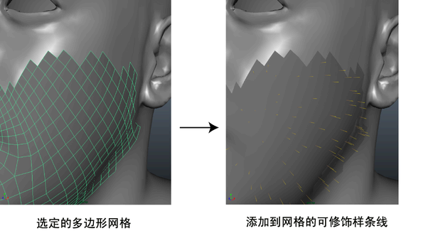

使用修饰笔刷可为角色的头发或毛发添加、缩放、雕刻和定位可修饰样条线。可修饰样条线是不可渲染的样条线基本体，您可以先使用笔刷定形，然后预览并渲染为默认样条线基本体。使用基于笔刷的修饰工具创建胡须、胡茬、平头发型和短毛。
注： 可修饰样条线不跟随动画或变形网格。在已绑定描述的多边形网格的静态姿势/版本上定形和放置可修饰样条线。可修饰样条线的默认样条线版本跟随动画或变形网格。
有关使用可修饰样条线的工作流示例，请参见使用可修饰样条线修饰胡须工作流示例。
- 选择要在其上创建头发或毛发的角色网格或网格的面。
- 从“建模”(Modeling)菜单集中，选择。
- 在“创建 XGen 描述”(Create XGen Description)窗口中，键入“新的描述名称”(New Description Name)和“集合”(Collection)名称。
XGen 描述存储用于定位、生成和控制样条线的设置。有关描述的详细信息，请参见 XGen 描述。
集合提供了一种组织描述和描述使用的关联文件的方法。有关集合的详细信息，请参见 XGen 集合。
- 将“此描述将生成什么类型的基本体？”(What kind of Primitives are made by this Description?)设置为“可修饰样条线”(Groomable splines)。
将自动设置“创建 XGen 描述”(Create XGen Description)中的所有其他选项。
- 单击“创建”(Create)。
XGen 会创建一个新的“描述”(Description)，并将可修饰样条线添加到选定曲面。
 - 在 XGen 编辑器中，单击“修饰”(Grooming)选项卡，然后选择一个笔刷来修饰样条线。 重要： 增加可修饰样条线的“密度”(Density)之前，请将“采样”(Sampling)设置为“最近”(Nearest)或“插值”(Interp)。否则，修饰将重置，以前的笔刷笔划将被清除。请参见设置。
若要增大或减小笔刷工具的半径，请按住 B 键拖动。
- 当您对修饰感到满意时，请在“设置”(Settings)中关闭“可见性”(Visibility)。
- 在 XGen 编辑器工具栏中，单击
 以查看修饰的可渲染样条线版本。
以查看修饰的可渲染样条线版本。 可修饰样条线没有渲染。
- 单击“基本体”(Primitives)选项卡，以进一步更改默认样条线。
- 重复步骤 6 到 9，以创建所需效果。
修饰提示
- 如果希望只将样条线放置在绘制的区域，单击
 图标，以选择“长度”(Length)笔刷，将“目标长度”(Goal Length)设置为 1，然后将“长度”(Length)设置为 0。可修饰样条线只会显示在由“长度”(Length)笔刷绘制的区域中。
图标，以选择“长度”(Length)笔刷，将“目标长度”(Goal Length)设置为 1，然后将“长度”(Length)设置为 0。可修饰样条线只会显示在由“长度”(Length)笔刷绘制的区域中。 请参见笔刷。
- 如果可修饰样条线“密度”(Density)设置为较高的值，禁用“自动更新预览”(Update Preview Automatically)可改善笔刷交互。